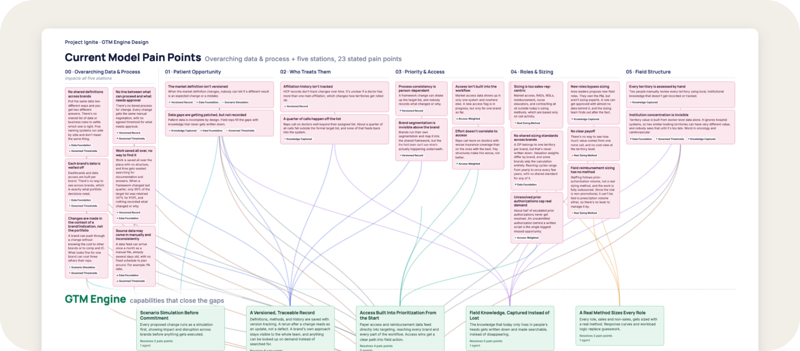
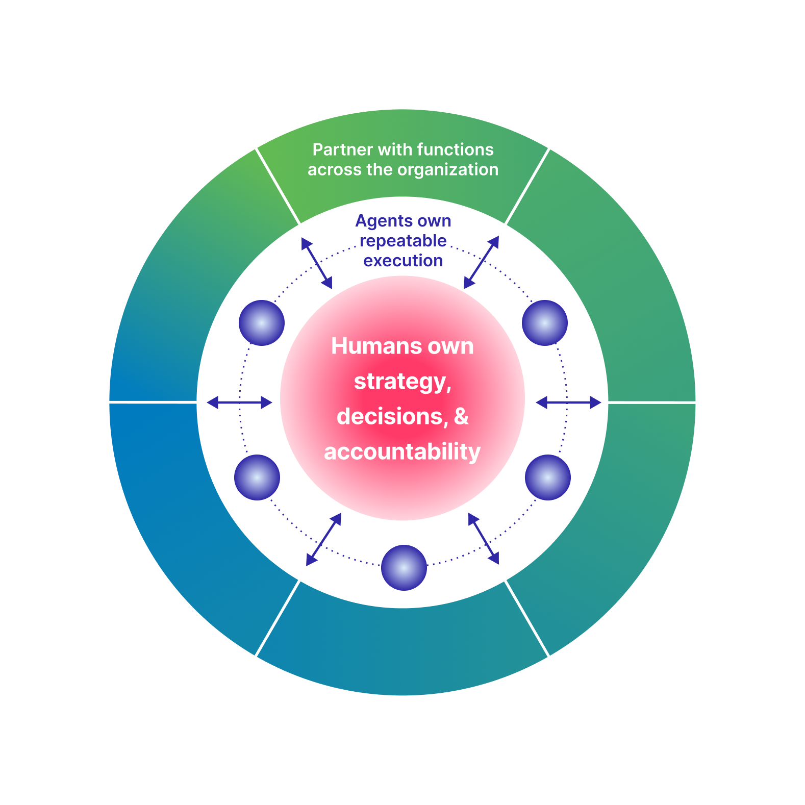

This project covers a pharma client's internal go-to-market model. Enter the password to read it, or reach out to me at my email below for access.
That's not it. Try again.

The client's portfolio was growing faster than its go-to-market model could keep up. Every launch, new indication, and resourcing question meant rebuilding the analysis from scratch, brand by brand.
IGNITE is a client-owned GTM capability that replaces those periodic exercises with one that can be rerun on demand. AI assembles the inputs and generates scenarios; people make the call.
I worked on discovery, mapped the current-state pain points, and helped shape the target-state model and the leadership story that took it to the client's executives.
GTM exercises ran periodically, while patient, access, and market signals changed faster than the planning cycle.
Each brand was planned on its own, so cross-brand tradeoffs were hard to evaluate consistently.
More launches, indications, and scenarios added load to people, processes, and outside vendors.
We ran discovery sessions with brand, field, market access, and analytics stakeholders across four brands to find where a new capability could create the most value.
Stakeholders described the four needs below. They also made clear that governance, cross-functional ownership, and human decision rights had to be built in from the start.
The map below is the working output from those sessions: an overarching data and process layer that touches all five stations, plus the station-specific pain points underneath. Each card connector is color-coded to the solution area it points to.
The pain points pointed to one answer: a single GTM backbone that every brand shares, configured for each brand's lifecycle, access environment, and field model. It had to be rerunnable on demand, connected across every input, and explainable at every step. The biggest change is in how the work flows. Toggle between the two views to see it.
Swipe sideways to explore the full flow →
A recurring concern in discovery was handing decisions to a black box. The operating model keeps people accountable: AI does the assembly, people own the outcome.

IGNITE is in progress. A human-led proof of concept on one brand is validating the framework before the engine runs it at scale.